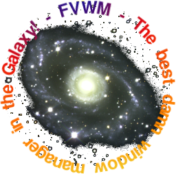
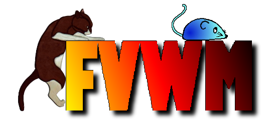

Here's my first attempts at using the GIMP.
Window managers are so intangible. It took me a while to think of an idea for the FVWM logo. In the end I was asking myself what I think of when I think of FVWM & this is what I came up with:
This logo isn't serious - it's just for a laugh. Having a background in Astronomy, it is natural to think of the bigger picture. I couldn't find a picture of the universe, so:

I love butterflies & I love FVWM, so:

The Feline theme (not my idea) is a great one!


What do palm trees have to do with FVWM? Dunno, but it looks good.